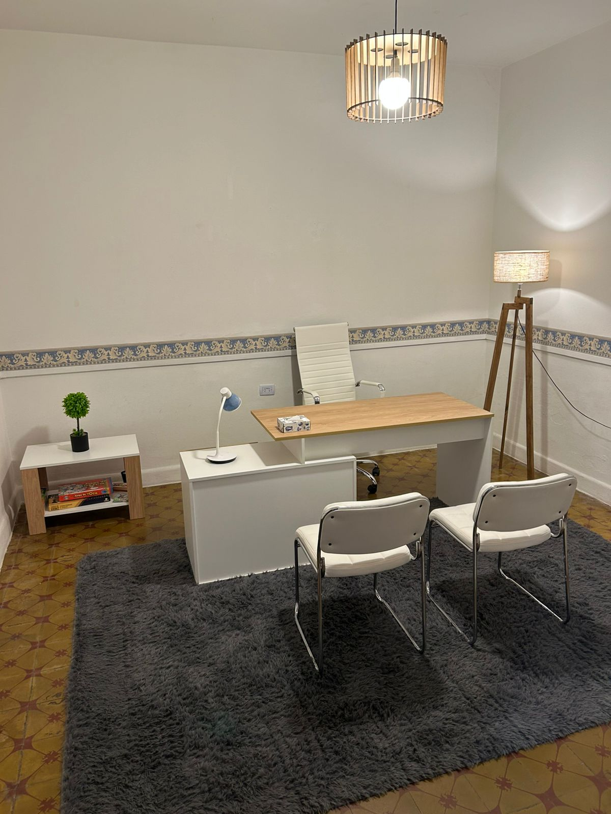
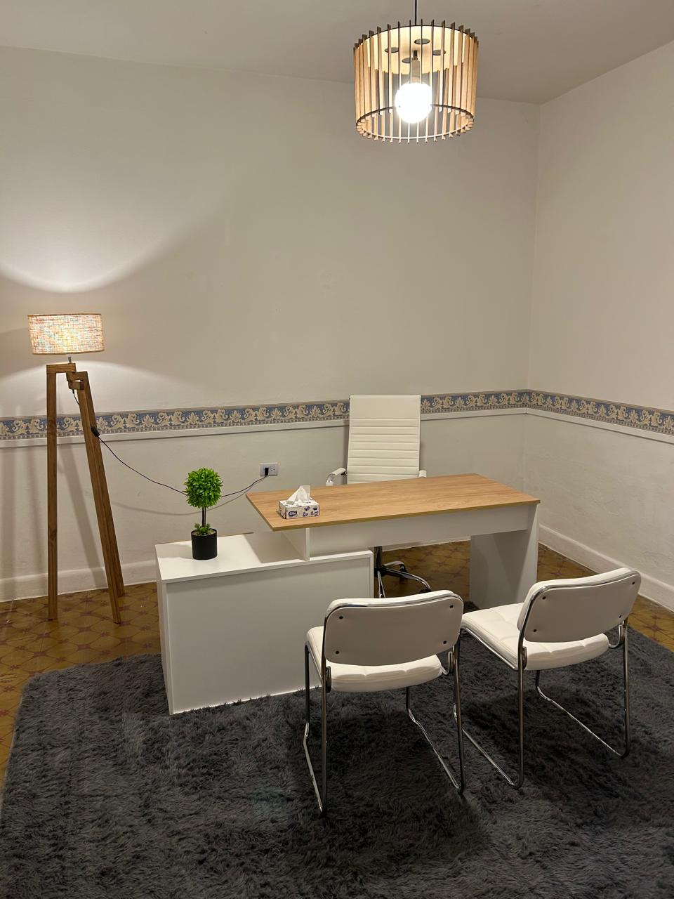
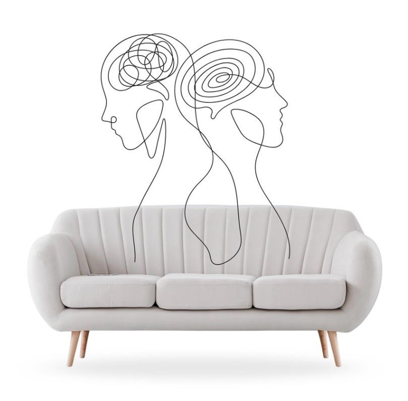

Psicología
Carrera de grado
Universidad Nacional de San Luis · Argentina
Bienvenido/a
Terapia online
Un acompañamiento relacional y vincular diseñado para personas que buscan procesar el estrés, fortalecer sus vínculos y adaptarse a su presente para disfrutarlo a pleno.

Hay vínculos que hieren y lastiman;
y hay vínculos que sanan.
Te doy la bienvenida

Micro-video de bienvenida · 30–45 s“Hola, soy Luciano Rinaldi y sé muy bien lo que significa construir un proyecto de vida en el exterior, aprovechar las oportunidades, pero también enfrentar la distancia, las exigencias del entorno y la reconfiguración de nuestros vínculos. Como psicólogo especializado en psicoanálisis vincular y relacional, ofrezco un espacio seguro y en tu propio idioma para pensar tu bienestar, sanar dinámicas familiares o de pareja y reencontrar tu centro.”
A veces el malestar no se expresa como un “trastorno”, sino como una tensión en la vida cotidiana y en los vínculos. Reconocerlo es el primer paso.
La culpa o nostalgia por la familia que quedó en el país de origen, o la sensación de no pertenecer del todo a ningún lugar.
La presión por sostener el éxito profesional y económico en un entorno hipercompetitivo, donde el ritmo de vida no te deja pensar.
Desafíos en la crianza de hijos que crecen en una cultura distinta a la tuya, o conflictos de pareja que se repiten.
La dificultad para establecer vínculos sanos en las relaciones personales y laborales sin sentir culpa.
Pérdidas, despedidas y cambios que no terminaron de elaborarse y que siguen pesando en el presente.
Desde el psicoanálisis vincular y relacional entendemos que no sufrimos solos: nuestra mente se construye a partir del vínculo con las personas significativas. Estoy para escucharte, entenderte y acompañarte.
Luciano Rinaldi
Un puente bicultural
Entre tu historia y tu presente, entre dos culturas que conocés de adentro.
Haber vivido 10 años en el exterior (Brasil, Estados Unidos, Italia y España) me permitió experimentar las exigencias y desafíos emocionales de desarrollarme en una cultura distinta. Comprendo los desafíos de vivir en otro país, la importancia de expresar tus emociones en tu propia lengua, y la necesidad de contar con un profesional que entienda tu trasfondo cultural sin que tengas que explicárselo desde cero.
Carrera de grado
Universidad Nacional de San Luis · Argentina
Carrera de pregrado
Università Regina Apostolorum · Roma, Italia
Carrera de pregrado
Legion of Christ College of Humanities · CT, USA
El enfoque
Un enfoque centrado en tus vínculos y en tu forma de habitar el mundo.

Para el psicoanálisis vincular relacional, la mente es un producto relacional, resultado de vínculos significativos: somos habitados por otros. No sufrimos solos.
Entiendo la salud mental con la analogía del diamante y sus atravesamientos: historia familiar, cultura, educación, trabajo, amigos, pareja, mandatos y espiritualidad. Cada cara le da forma a quién sos.
En vez de un diagnóstico que te etiquete, abrimos un espacio de pensamiento para comprender por qué duele lo que duele hoy y qué patrones estás repitiendo en tus relaciones.
Primera etapa
Un primer tramo para conocernos y entender tu historia.
Segunda etapa
El trabajo sostenido hacia los cambios que buscás.
El encuadre online se adapta a tus horarios: podés coordinar antes o después de tu jornada laboral, sin importar la diferencia horaria.
Mi espacio cumple con estrictos estándares de privacidad ética y secreto profesional.
Trabajamos con una plataforma confiable y profesional: Google Meet.
Paso a paso
Me escribís por WhatsApp o completás el formulario (nombre, WhatsApp y una breve descripción de lo que buscás).
Una conversación breve para conocernos y definir el encuadre.
Sesiones virtuales semanales a través de una plataforma segura.
Hablemos
Dejame tus datos y una breve descripción de lo que buscás. Te respondo personalmente para coordinar una primera conversación.
Terapia online a través de Google Meet. Respondo cada consulta de forma personal y confidencial.